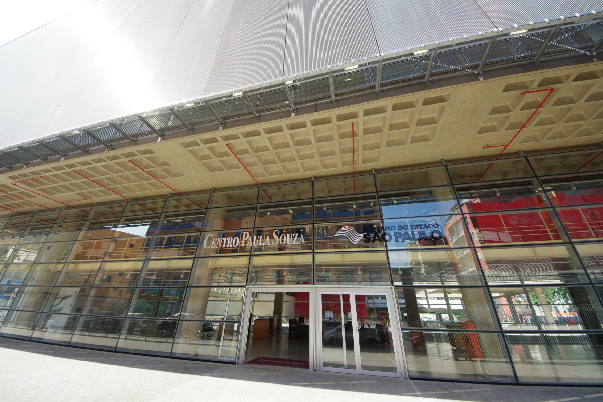

História
As ETECs têm suas raízes na década de 1960, quando o estado de São Paulo reconheceu a necessidade de oferecer educação técnica de qualidade para atender às demandas crescentes da indústria e do mercado de trabalho. Assim, em 1969, foi criado o Centro Paula Souza, responsável pela gestão das escolas técnicas no estado.
No entanto, foi na década de 1990 que as ETECs ganharam maior destaque e expansão. O Governo do Estado de São Paulo, percebendo a importância da formação técnica para o desenvolvimento econômico e social, iniciou um programa de expansão das escolas técnicas, visando democratizar o acesso à educação técnica de qualidade em todo o estado.
Desde então, as ETECs têm crescido em número e prestígio, oferecendo uma ampla gama de cursos técnicos e de ensino médio integrado ao técnico em diversas áreas, como informática, mecânica, eletrônica, administração, entre outras. Elas se tornaram referência no ensino técnico no Brasil, preparando milhares de estudantes para ingressarem no mercado de trabalho ou prosseguirem seus estudos em nível superior.
Além disso, as ETECs têm se adaptado às mudanças tecnológicas e às demandas do mercado, atualizando constantemente sua grade curricular e investindo em infraestrutura e recursos educacionais para proporcionar uma formação de excelência aos seus alunos.
Hoje, as ETECs são reconhecidas como uma das principais instituições de ensino técnico do Brasil, contribuindo significativamente para o desenvolvimento socioeconômico do estado de São Paulo e do país como um todo.

Como a etec influenciou a educação no Brasil?
- Ênfase na educação técnica: A história das ETECs evidenciou a importância da educação técnica para atender às demandas do mercado de trabalho. Isso se reflete na atual ênfase das ETECs em oferecer uma variedade de cursos técnicos em diversas áreas, preparando os alunos para ingressarem diretamente no mercado ou para prosseguirem com estudos superiores.
- Integração com o mercado de trabalho: As ETECs demonstraram a importância de estabelecer parcerias com empresas e indústrias para proporcionar estágios, projetos e oportunidades de emprego aos alunos. Isso continua a influenciar a forma como as ETECs estruturam seus programas de estudo, enfatizando a aplicação prática do conhecimento adquirido em sala de aula.
- Flexibilidade curricular: Ao longo do tempo, as ETECs adaptaram seus currículos para acompanhar as mudanças nas demandas do mercado e avanços tecnológicos. Isso resultou em uma maior flexibilidade nos cursos oferecidos, permitindo que os alunos escolham entre uma ampla gama de opções de estudo alinhadas com seus interesses e aspirações de carreira.
- Inovação educacional: As ETECs também inspiraram a busca por inovação educacional, incluindo a adoção de novas metodologias de ensino, tecnologias educacionais e abordagens pedagógicas que promovam uma aprendizagem mais ativa, colaborativa e centrada no aluno.
.jpg)
Todos os direitos reservados © 2024 Etec | Miguel Angelo de Andrade | Miguel Estevam Reis